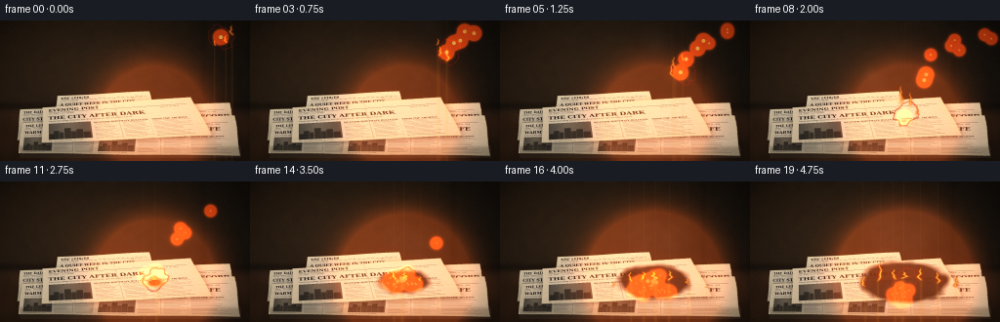
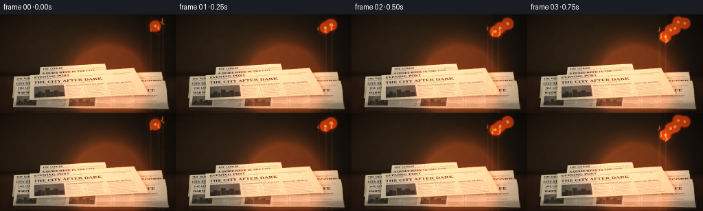
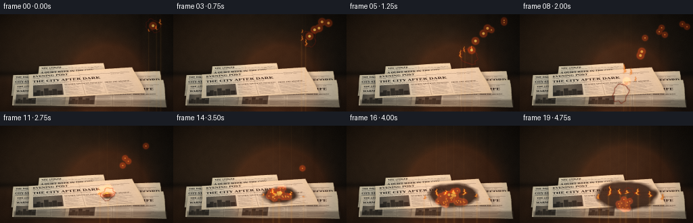
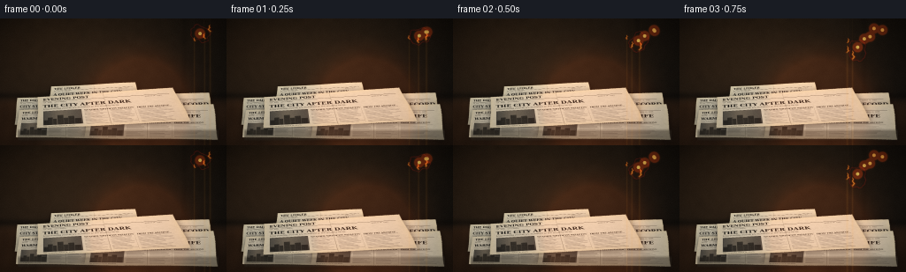

CODING AGENTS AS PIXEL WORLD MODELS
traex/DeepSeek-V4.1-Flash · phygen_145
点击播放 · 原生 RGB 像素
逐轮保存的候选
回放视频、检查图与代码变化。
每份候选均可单独播放。实际图片检查记录在下方工具轨迹中。
候选 01播放与检查图
点击播放 · 原生 RGB 像素


展开代码变化
--- 上一保存版本
+++ 本次保存版本
@@ -0,0 +1,673 @@
+"""Procedural RGB animation: a burning cloth lands in a pile of newspapers."""
+
+from __future__ import annotations
+
+import math
+from pathlib import Path
+
+import cv2
+import numpy as np
+from PIL import Image, ImageDraw, ImageFilter, ImageFont
+
+import artifact_io
+
+
+W, H, N, FPS = 256, 144, 20, 4.0
+S = 4
+RW, RH = W * S, H * S
+CASE = Path(__file__).resolve().parent
+RNG = np.random.default_rng(145)
+
+SERIF_BOLD = "/usr/share/fonts/truetype/dejavu/DejaVuSerifCondensed-Bold.ttf"
+SERIF = "/usr/share/fonts/truetype/dejavu/DejaVuSerifCondensed.ttf"
+SANS = "/usr/share/fonts/truetype/dejavu/DejaVuSansCondensed.ttf"
+
+
+def font(path: str, size: int) -> ImageFont.FreeTypeFont:
+ return ImageFont.truetype(path, size)
+
+
+def smoothstep(a: float, b: float, x):
+ if a == b:
+ return np.asarray(x >= b, dtype=np.float32)
+ u = np.clip((x - a) / (b - a), 0.0, 1.0)
+ result = u * u * (3.0 - 2.0 * u)
+ return float(result) if np.ndim(result) == 0 else result
+
+
+def norm01(a: np.ndarray) -> np.ndarray:
+ lo, hi = float(a.min()), float(a.max())
+ return (a - lo) / max(1e-6, hi - lo)
+
+
+def blur(a: np.ndarray, sigma: float) -> np.ndarray:
+ return cv2.GaussianBlur(a.astype(np.float32), (0, 0), sigmaX=sigma, sigmaY=sigma)
+
+
+def rgb_over(base: np.ndarray, color: tuple[float, float, float], mask: np.ndarray) -> np.ndarray:
+ m = np.clip(mask, 0.0, 1.0)[..., None]
+ col = np.asarray(color, dtype=np.float32)
+ return base * (1.0 - m) + col * m
+
+
+def add_rgb(base: np.ndarray, color: tuple[float, float, float], mask: np.ndarray) -> np.ndarray:
+ return base + np.asarray(color, dtype=np.float32) * np.clip(mask, 0.0, 1.0)[..., None]
+
+
+def alpha_composite_rgba(base: np.ndarray, rgba: np.ndarray) -> np.ndarray:
+ alpha = rgba[..., 3:4].astype(np.float32) / 255.0
+ return base * (1.0 - alpha) + rgba[..., :3].astype(np.float32) * alpha
+
+
+def make_background() -> np.ndarray:
+ yy, xx = np.mgrid[0:RH, 0:RW].astype(np.float32)
+ xn, yn = xx / RW, yy / RH
+
+ # Deep umber wall with a soft pool of warm light from camera left.
+ wall = np.empty((RH, RW, 3), dtype=np.float32)
+ wall[..., 0] = 24 + 21 * (1.0 - xn) + 10 * (1.0 - yn)
+ wall[..., 1] = 22 + 13 * (1.0 - xn) + 5 * (1.0 - yn)
+ wall[..., 2] = 19 + 7 * (1.0 - xn)
+
+ coarse = RNG.normal(0.0, 1.0, (RH // 8, RW // 8)).astype(np.float32)
+ coarse = cv2.resize(coarse, (RW, RH), interpolation=cv2.INTER_CUBIC)
+ coarse = blur(coarse, 9.0)
+ coarse = norm01(coarse) - 0.5
+ wall += coarse[..., None] * np.array([8.0, 6.0, 4.0], dtype=np.float32)
+
+ # Old timber tabletop, kept quiet so the paper pile owns the composition.
+ horizon = int(0.61 * RH)
+ table_mask = np.clip((yy - horizon) / (10.0 * S), 0.0, 1.0)
+ table = np.empty_like(wall)
+ grain = (
+ np.sin(xx * 0.023 + 1.6 * np.sin(yy * 0.025))
+ + 0.45 * np.sin(xx * 0.061 - yy * 0.009)
+ + 0.25 * np.sin(xx * 0.131 + yy * 0.018)
+ )
+ grain = blur(grain.astype(np.float32), 1.2)
+ table[..., 0] = 49 + 5.0 * grain + 13 * (1.0 - xn) + 8 * yn
+ table[..., 1] = 35 + 3.3 * grain + 7 * (1.0 - xn) + 4 * yn
+ table[..., 2] = 25 + 2.0 * grain + 3 * (1.0 - xn) + 1 * yn
+ scene = wall * (1.0 - table_mask[..., None]) + table * table_mask[..., None]
+
+ # Dark skirting line between wall and table.
+ edge = np.exp(-((yy - horizon) / (3.0 * S)) ** 2)
+ scene = rgb_over(scene, (13, 12, 10), edge * 0.55)
+
+ # A barely visible vertical seam keeps the background from feeling empty.
+ seam_x = int(0.815 * RW)
+ seam = np.exp(-((xx - seam_x) / (2.5 * S)) ** 2) * (yy < horizon)
+ scene = rgb_over(scene, (12, 11, 9), seam * 0.25)
+
+ # Broad key light and gentle lens falloff.
+ key = np.exp(-(((xn - 0.16) / 0.46) ** 2 + ((yn - 0.28) / 0.58) ** 2) * 1.7)
+ scene = add_rgb(scene, (20, 12, 5), key * 0.33)
+ vignette = np.clip(1.0 - 0.48 * (((xn - 0.5) / 0.68) ** 2 + ((yn - 0.52) / 0.78) ** 2), 0.28, 1.0)
+ scene *= vignette[..., None]
+
+ # Background is slightly defocused relative to the paper pile.
+ scene = cv2.GaussianBlur(scene, (0, 0), 1.6 * S)
+ return np.clip(scene, 0, 255)
+
+
+def paper_mask(pw: int, ph: int, seed: int) -> np.ndarray:
+ rng = np.random.default_rng(seed)
+ yy, xx = np.mgrid[0:ph, 0:pw]
+ top = 3 + 2.5 * np.sin(np.linspace(0, 7.2, pw) + seed) + rng.normal(0, 0.8, pw)
+ bottom = ph - 4 - 2.0 * np.sin(np.linspace(1, 8.4, pw) + seed * 0.7) + rng.normal(0, 0.7, pw)
+ left = 4 + 2.0 * np.sin(np.linspace(0, 6.5, ph) + seed * 0.3) + rng.normal(0, 0.6, ph)
+ right = pw - 4 - 2.0 * np.sin(np.linspace(1, 7.1, ph) + seed * 0.5) + rng.normal(0, 0.6, ph)
+ top_line = top[np.clip(xx, 0, pw - 1)]
+ bottom_line = bottom[np.clip(xx, 0, pw - 1)]
+ left_line = left[np.clip(yy, 0, ph - 1)]
+ right_line = right[np.clip(yy, 0, ph - 1)]
+ mask = (yy >= top_line) & (yy <= bottom_line) & (xx >= left_line) & (xx <= right_line)
+ mask = cv2.GaussianBlur(mask.astype(np.float32), (0, 0), 0.8)
+ return np.clip(mask, 0, 1)
+
+
+def make_page(seed: int, masthead: str, headline: str, accent: tuple[int, int, int]) -> np.ndarray:
+ pw, ph = 680, 304
+ rng = np.random.default_rng(seed)
+ yy, xx = np.mgrid[0:ph, 0:pw].astype(np.float32)
+
+ paper = np.empty((ph, pw, 3), dtype=np.float32)
+ base = np.array([204.0, 197.0, 178.0]) + rng.normal(0, 1.4, 3)
+ paper[:] = base
+ mottle = rng.normal(0.0, 1.0, (ph // 5, pw // 5)).astype(np.float32)
+ mottle = cv2.resize(mottle, (pw, ph), interpolation=cv2.INTER_CUBIC)
+ mottle = blur(mottle, 4.0)
+ paper += mottle[..., None] * np.array([5.0, 4.6, 4.0], dtype=np.float32)
+ fiber = (rng.random((ph, pw, 1)) - 0.5) * 5.0
+ paper += fiber
+
+ # Yellowing toward the outer edges and old water marks.
+ edge_dist = np.minimum.reduce([xx, pw - 1 - xx, yy, ph - 1 - yy])
+ edge = np.exp(-edge_dist / 24.0)
+ paper[..., 0] += 12 * edge
+ paper[..., 1] += 7 * edge
+ paper[..., 2] -= 6 * edge
+ for _ in range(5):
+ cx, cy = rng.uniform(30, pw - 30), rng.uniform(20, ph - 20)
+ radius = rng.uniform(12, 34)
+ stain = np.exp(-(((xx - cx) / radius) ** 2 + ((yy - cy) / (radius * 0.7)) ** 2) * 2.2)
+ paper = rgb_over(paper, (166, 142, 100), stain * rng.uniform(0.025, 0.08))
+
+ page = Image.fromarray(np.clip(paper, 0, 255).astype(np.uint8), "RGB")
+ draw = ImageDraw.Draw(page, "RGBA")
+ ink = (40, 38, 33, 230)
+ faded = (71, 67, 58, 180)
+ rule = (83, 79, 68, 110)
+
+ # Masthead and rule.
+ draw.text((32, 17), masthead, font=font(SERIF_BOLD, 30), fill=(35, 32, 28, 245))
+ draw.line((32, 55, 646, 55), fill=(45, 42, 36, 210), width=2)
+ draw.text((33, 61), "VOL. XLVII - CITY EDITION", font=font(SANS, 10), fill=(72, 67, 59, 190))
+ draw.text((535, 61), "MARCH 14, 1968", font=font(SANS, 10), fill=(72, 67, 59, 190))
+
+ # Headline and deck.
+ draw.text((32, 82), headline, font=font(SERIF_BOLD, 36), fill=(31, 30, 27, 245))
+ draw.text(
+ (34, 123),
+ "Long-standing records are disturbed as the weather turns",
+ font=font(SERIF, 14),
+ fill=faded,
+ )
+
+ # Photo block with a coarse halftone texture.
+ px0, py0, px1, py1 = 34, 151, 224, 277
+ photo = np.zeros((py1 - py0, px1 - px0, 3), dtype=np.float32)
+ pyy, pxx = np.mgrid[0:py1 - py0, 0:px1 - px0].astype(np.float32)
+ photo[..., 0] = 78 + 35 * np.exp(-((pxx - 88) / 68) ** 2)
+ photo[..., 1] = 76 + 28 * np.exp(-((pxx - 88) / 68) ** 2)
+ photo[..., 2] = 70 + 20 * np.exp(-((pxx - 88) / 68) ** 2)
+ photo += (rng.random(photo.shape[:2])[..., None] - 0.5) * 30
+ # City skyline silhouette.
+ for i, (bx, bw, bh) in enumerate([(3, 20, 42), (23, 24, 64), (49, 18, 51), (71, 29, 82), (101, 22, 55), (124, 28, 69), (154, 31, 48)]):
+ y0 = py1 - py0 - bh
+ photo[y0:, bx:bx + bw] *= 0.48
+ for wx in range(bx + 4, min(px1 - px0 - 2, bx + bw - 3), 7):
+ photo[y0 + 5::11, wx:wx + 2] = np.maximum(photo[y0 + 5::11, wx:wx + 2], 118)
+ photo = cv2.GaussianBlur(photo, (0, 0), 0.8)
+ page.paste(Image.fromarray(np.clip(photo, 0, 255).astype(np.uint8)), (px0, py0))
+ draw.rectangle((px0, py0, px1, py1), outline=(58, 55, 48, 200), width=1)
+ draw.text((34, 281), "The old quarter before the storm.", font=font(SERIF, 10), fill=faded)
+
+ # Article columns: fine rules read as legible print when scaled down.
+ col_specs = [(238, 350), (360, 472), (482, 644)]
+ for ci, (x0, x1) in enumerate(col_specs):
+ if ci:
+ draw.line((x0 - 12, 151, x0 - 12, 286), fill=rule, width=1)
+ y = 153
+ if ci == 0:
+ draw.text((x0, y), "WEATHER SHIFTS", font=font(SERIF_BOLD, 13), fill=ink)
+ y += 19
+ elif ci == 1:
+ draw.text((x0, y), "CITY BULLETIN", font=font(SERIF_BOLD, 13), fill=ink)
+ y += 19
+ else:
+ draw.text((x0, y), "FROM THE ARCHIVE", font=font(SERIF_BOLD, 13), fill=ink)
+ y += 19
+ line_idx = 0
+ while y < 282:
+ width_frac = rng.uniform(0.62, 1.0)
+ if line_idx % 9 == 8:
+ width_frac = rng.uniform(0.35, 0.7)
+ width = int((x1 - x0) * width_frac)
+ thickness = 2 if line_idx % 3 else 3
+ shade = int(rng.uniform(76, 122))
+ draw.line((x0, y, x0 + width, y), fill=(shade, shade - 3, shade - 8, 155), width=thickness)
+ y += 9
+ line_idx += 1
+
+ # Fold and handling creases.
+ crease = Image.new("RGBA", (pw, ph), (0, 0, 0, 0))
+ cd = ImageDraw.Draw(crease)
+ cd.line((342, 4, 349, ph - 5), fill=(58, 53, 43, 70), width=2)
+ cd.line((346, 5, 353, ph - 5), fill=(242, 234, 213, 45), width=1)
+ cd.line((6, 220, pw - 5, 214), fill=(74, 67, 52, 45), width=2)
+ crease = crease.filter(ImageFilter.GaussianBlur(0.55))
+ page = Image.alpha_composite(page.convert("RGBA"), crease).convert("RGB")
+
+ arr = np.asarray(page).astype(np.float32)
+ mask = paper_mask(pw, ph, seed)
+ rgba = np.dstack([np.clip(arr, 0, 255), mask * 255.0]).astype(np.uint8)
+ return rgba
+
+
+PAGE_SPECS = [
+ (11, "THE DAILY RECORD", "CITY STREETS STIR EARLY", (61, 69, 65)),
+ (17, "EVENING POST", "MARKET CROWD SETS A RECORD", (70, 63, 54)),
+ (23, "THE LEDGER", "WARM WINDS REACH THE VALLEY", (66, 60, 54)),
+ (29, "THE DAILY RECORD", "OLD DISTRICTS SEE NEW LIFE", (61, 69, 65)),
+ (37, "EVENING POST", "THE CITY AFTER DARK", (70, 63, 54)),
+ (43, "THE LEDGER", "A QUIET WEEK IN THE CITY", (66, 60, 54)),
+]
+
+
+def warp_page(src: np.ndarray, corners: list[tuple[float, float]]) -> np.ndarray:
+ sh, sw = src.shape[:2]
+ pts_src = np.float32([[0, 0], [sw - 1, 0], [sw - 1, sh - 1], [0, sh - 1]])
+ pts_dst = np.float32([(x * S, y * S) for x, y in corners])
+ matrix = cv2.getPerspectiveTransform(pts_src, pts_dst)
+ return cv2.warpPerspective(
+ src,
+ matrix,
+ (RW, RH),
+ flags=cv2.INTER_CUBIC,
+ borderMode=cv2.BORDER_CONSTANT,
+ borderValue=(0, 0, 0, 0),
+ )
+
+
+def composite_page(scene: np.ndarray, rgba: np.ndarray, shadow_dx: float, shadow_dy: float) -> tuple[np.ndarray, np.ndarray]:
+ alpha = rgba[..., 3].astype(np.float32) / 255.0
+ shifted = np.roll(np.roll(alpha, int(shadow_dy), axis=0), int(shadow_dx), axis=1)
+ shadow = blur(shifted, 4.0 * S) * 0.58
+ scene = rgb_over(scene, (8, 7, 6), shadow)
+ scene = alpha_composite_rgba(scene, rgba)
+ return scene, alpha
+
+
+def build_pile(scene: np.ndarray) -> tuple[np.ndarray, np.ndarray]:
+ pages = [make_page(*spec) for spec in PAGE_SPECS]
+ # Back-to-front ordering. The top sheet leaves the masthead exposed.
+ placements = [
+ (0, [(20, 91), (128, 86), (135, 125), (17, 123)], 4, 8),
+ (1, [(105, 88), (236, 84), (241, 126), (102, 123)], 4, 7),
+ (5, [(58, 77), (153, 72), (161, 102), (54, 108)], 3, 7),
+ (2, [(22, 105), (135, 99), (143, 138), (18, 136)], 3, 8),
+ (3, [(99, 102), (241, 97), (247, 139), (93, 137)], 4, 8),
+ (4, [(43, 89), (196, 78), (218, 118), (42, 126)], 3, 8),
+ ]
+ pile_alpha = np.zeros((RH, RW), dtype=np.float32)
+ for page_index, corners, dx, dy in placements:
+ warped = warp_page(pages[page_index], corners)
+ scene, alpha = composite_page(scene, warped, dx, dy)
+ pile_alpha = np.maximum(pile_alpha, alpha)
+
+ # A thin stack edge under the front sheets.
+ yy, xx = np.mgrid[0:RH, 0:RW].astype(np.float32)
+ front = ((xx > 20 * S) & (xx < 247 * S) & (yy > 127 * S) & (yy < 141 * S)).astype(np.float32)
+ front *= np.clip((yy - 127 * S) / (4 * S), 0, 1)
+ scene = rgb_over(scene, (76, 68, 55), front * 0.32)
+ pile_alpha = np.maximum(pile_alpha, front * 0.5)
+ return scene, pile_alpha
+
+
+def make_cloth() -> np.ndarray:
+ cw, ch = 124, 94
+ rng = np.random.default_rng(91)
+ yy, xx = np.mgrid[0:ch, 0:cw].astype(np.float32)
+ mask = Image.new("L", (cw, ch), 0)
+ md = ImageDraw.Draw(mask)
+ points = [
+ (12, 14), (35, 5), (66, 8), (92, 4), (116, 21), (108, 42),
+ (119, 63), (97, 87), (69, 80), (49, 91), (22, 79), (8, 54), (15, 36),
+ ]
+ md.polygon(points, fill=255)
+ # Small ragged notches at the edges.
+ for x, y, r in [(15, 13, 5), (115, 24, 4), (100, 88, 5), (18, 76, 4)]:
+ md.ellipse((x - r, y - r, x + r, y + r), fill=0)
+ mask_arr = cv2.GaussianBlur(np.asarray(mask).astype(np.float32), (0, 0), 0.7)
+
+ # Woven oxblood cloth with directional fold light.
+ cloth = np.empty((ch, cw, 3), dtype=np.float32)
+ weave = (np.sin(xx * 1.42) + np.sin(yy * 1.23)) * 3.0
+ fold = 18 * np.exp(-((xx - 48 - 0.16 * yy) / 14) ** 2)
+ fold -= 10 * np.exp(-((xx - 88 + 0.10 * yy) / 10) ** 2)
+ cloth[..., 0] = 91 + weave + fold + 10 * (1 - xx / cw)
+ cloth[..., 1] = 24 + weave * 0.55 + fold * 0.34
+ cloth[..., 2] = 25 + weave * 0.5 + fold * 0.38
+ cloth += rng.normal(0, 2.2, (ch, cw, 1))
+
+ # Dark charred border and a narrow ember glow.
+ dist = cv2.distanceTransform((mask_arr > 0.5).astype(np.uint8), cv2.DIST_L2, 5)
+ edge = np.clip(1.0 - dist / 7.0, 0, 1)
+ cloth = rgb_over(cloth, (19, 13, 11), edge * 0.82)
+ rim = np.clip(1.0 - np.abs(dist - 2.4) / 2.2, 0, 1) * (mask_arr > 0.2)
+ cloth = add_rgb(cloth, (92, 27, 5), rim * 0.72)
+ return np.dstack([np.clip(cloth, 0, 255), mask_arr * 255.0]).astype(np.uint8)
+
+
+CLOTH = make_cloth()
+
+
+def cloth_frame(phase: float, burn: float) -> Image.Image:
+ h, w = CLOTH.shape[:2]
+ yy, xx = np.mgrid[0:h, 0:w].astype(np.float32)
+ amp = 2.8 * burn + 0.9
+ map_x = xx + amp * np.sin(yy * 0.18 + phase) * np.sin(xx * 0.06 + 0.4)
+ map_y = yy + 1.8 * np.sin(xx * 0.11 - phase * 1.3)
+ warped = cv2.remap(
+ CLOTH,
+ map_x,
+ map_y,
+ interpolation=cv2.INTER_CUBIC,
+ borderMode=cv2.BORDER_CONSTANT,
+ borderValue=(0, 0, 0, 0),
+ )
+ return Image.fromarray(warped, "RGBA")
+
+
+def paste_rgba(scene: np.ndarray, image: Image.Image, center: tuple[float, float], angle: float, scale: float = 1.0) -> np.ndarray:
+ if abs(scale - 1.0) > 1e-4:
+ image = image.resize(
+ (max(1, int(round(image.width * scale))), max(1, int(round(image.height * scale)))),
+ Image.Resampling.BICUBIC,
+ )
+ rotated = image.rotate(angle, resample=Image.Resampling.BICUBIC, expand=True, fillcolor=(0, 0, 0, 0))
+ arr = np.asarray(rotated)
+ cx, cy = int(round(center[0] * S)), int(round(center[1] * S))
+ x0, y0 = cx - arr.shape[1] // 2, cy - arr.shape[0] // 2
+ x1, y1 = x0 + arr.shape[1], y0 + arr.shape[0]
+ sx0, sy0 = max(0, x0), max(0, y0)
+ sx1, sy1 = min(RW, x1), min(RH, y1)
+ if sx0 >= sx1 or sy0 >= sy1:
+ return scene
+ crop = arr[sy0 - y0:sy1 - y0, sx0 - x0:sx1 - x0]
+ alpha = crop[..., 3:4].astype(np.float32) / 255.0
+ shadow_alpha = blur(crop[..., 3].astype(np.float32) / 255.0, 5.0)
+ region = scene[sy0:sy1, sx0:sx1]
+ region = region * (1.0 - 0.24 * shadow_alpha[..., None])
+ region = region * (1.0 - alpha) + crop[..., :3].astype(np.float32) * alpha
+ scene[sy0:sy1, sx0:sx1] = region
+ return scene
+
+
+def flame_field(base: tuple[float, float], height: float, width: float, phase: float, strength: float) -> tuple[np.ndarray, np.ndarray, np.ndarray]:
+ yy, xx = np.mgrid[0:RH, 0:RW].astype(np.float32)
+ bx, by = base[0] * S, base[1] * S
+ hh = max(2.0, height * S)
+ ww = max(2.0, width * S)
+ v = np.clip((by - yy) / hh, 0.0, 1.0)
+ center = 0.18 * np.sin(v * 7.0 + phase) * (1.0 - v) + 0.07 * np.sin(v * 16.0 - phase * 0.7)
+ half = 0.43 * (1.0 - v) ** 0.62 + 0.035
+ u = (xx - bx) / ww
+ core = np.exp(-((u - center) / np.maximum(half, 0.03)) ** 2 * 1.9)
+ vertical = np.clip((v + 0.02) * 4.5, 0, 1) * (1.0 - smoothstep(0.78, 1.0, v) * 0.92)
+ ripple = 0.82 + 0.18 * np.sin(v * 31.0 - phase * 2.0 + u * 5.0)
+ outer = core * vertical * ripple * (yy <= by) * (yy >= by - hh * 1.05)
+ mid = np.exp(-((u - center) / np.maximum(half * 0.66, 0.025)) ** 2 * 2.0) * vertical * ripple
+ inner = np.exp(-((u - center) / np.maximum(half * 0.31, 0.018)) ** 2 * 2.1) * vertical
+ return (
+ np.clip(outer * strength, 0, 1),
+ np.clip(mid * strength, 0, 1),
+ np.clip(inner * strength, 0, 1),
+ )
+
+
+def render_fire(
+ scene: np.ndarray,
+ flames: list[tuple[tuple[float, float], float, float, float, float]],
+ intensity: float,
+) -> tuple[np.ndarray, np.ndarray]:
+ outer = np.zeros((RH, RW), dtype=np.float32)
+ middle = np.zeros((RH, RW), dtype=np.float32)
+ inner = np.zeros((RH, RW), dtype=np.float32)
+ for base, height, width, phase, strength in flames:
+ if strength <= 0.01:
+ continue
+ o, m, i = flame_field(base, height, width, phase, strength)
+ outer = np.maximum(outer, o)
+ middle = np.maximum(middle, m)
+ inner = np.maximum(inner, i)
+
+ glow = blur(outer, 9.0 * S)
+ glow2 = blur(outer, 25.0 * S)
+ scene = add_rgb(scene, (82, 19, 3), glow2 * (0.55 + 0.38 * intensity))
+ scene = add_rgb(scene, (180, 55, 5), glow * (0.42 + 0.42 * intensity))
+
+ # Opaque, layered flame body with a hot core.
+ outer_alpha = np.clip(outer * 0.88, 0, 0.9)
+ scene = rgb_over(scene, (181, 42, 4), outer_alpha)
+ mid_alpha = np.clip(middle * 0.88, 0, 0.92)
+ scene = rgb_over(scene, (255, 111, 7), mid_alpha)
+ inner_alpha = np.clip(inner * 0.9, 0, 0.96)
+ scene = rgb_over(scene, (255, 224, 105), inner_alpha)
+ return scene, outer
+
+
+def render_smoke(scene: np.ndarray, frame: int) -> np.ndarray:
+ smoke_rgb = Image.new("RGB", (RW, RH), (0, 0, 0))
+ smoke_a = Image.new("L", (RW, RH), 0)
+ sd = ImageDraw.Draw(smoke_rgb)
+ sa = ImageDraw.Draw(smoke_a)
+ rng = np.random.default_rng(1000 + frame)
+
+ # Thin trail from the burning cloth while it is airborne.
+ if frame <= 9:
+ u = min(1.0, frame / 8.0)
+ cx = (226.0 - 66.0 * u) * S
+ cy = (17.0 + 78.0 * u ** 1.65) * S
+ for j in range(7):
+ age = j / 6.0
+ x = cx - (8 + 16 * u + 8 * age) * S + rng.normal(0, 2 * S)
+ y = cy - (10 + 25 * age) * S + rng.normal(0, 2 * S)
+ rad = (3.2 + 3.0 * age) * S
+ alpha = int((17 + 15 * age) * (0.55 + 0.45 * (frame / 9.0)))
+ shade = int(68 + 8 * age)
+ sa.ellipse((x - rad, y - rad, x + rad, y + rad), fill=alpha)
+ sd.ellipse((x - rad, y - rad, x + rad, y + rad), fill=(shade, shade - 5, shade - 8))
+
+ # A growing column above the pile after ignition.
+ if frame >= 8:
+ growth = smoothstep(8, 19, frame)
+ for j in range(34):
+ birth = 8 + (j % 13)
+ if frame < birth:
+ continue
+ age = min(1.0, (frame - birth) / 11.0)
+ side = (j % 5 - 2) / 2.0
+ x = (157 + side * (8 + 17 * age) + 8 * math.sin(j * 1.7 + age * 4)) * S
+ y = (98 - (5 + 56 * age ** 0.78) - (j % 4) * 2) * S
+ rad = (4.0 + 8.0 * age) * S
+ alpha = int((8 + 20 * growth) * (1.0 - 0.48 * age))
+ shade = int(74 + 18 * age)
+ sa.ellipse((x - rad * 0.9, y - rad, x + rad * 0.9, y + rad), fill=max(0, alpha))
+ sd.ellipse((x - rad * 0.9, y - rad, x + rad * 0.9, y + rad), fill=(shade, shade - 5, shade - 7))
+
+ a = blur(np.asarray(smoke_a).astype(np.float32) / 255.0, 6.0 * S)
+ c = cv2.GaussianBlur(np.asarray(smoke_rgb).astype(np.float32), (0, 0), 6.0 * S)
+ # Normalize RGB in transparent regions to avoid dark halos.
+ c = c / np.maximum(0.03, cv2.GaussianBlur(a, (0, 0), 6.0 * S))[..., None]
+ c = np.clip(c, 0, 120)
+ a *= 0.72
+ scene = scene * (1.0 - a[..., None]) + c * a[..., None]
+ return scene
+
+
+def fire_light(scene: np.ndarray, center: tuple[float, float], radius: float, strength: float) -> np.ndarray:
+ yy, xx = np.mgrid[0:RH, 0:RW].astype(np.float32)
+ cx, cy = center[0] * S, center[1] * S
+ r = radius * S
+ field = np.exp(-(((xx - cx) ** 2 + (yy - cy) ** 2) / (r * r)) * 1.7)
+ scene = add_rgb(scene, (82, 29, 6), field * strength)
+ return scene
+
+
+def render_sparks(scene: np.ndarray, frame: int) -> np.ndarray:
+ rng = np.random.default_rng(2200)
+ layer = np.zeros((RH, RW, 3), dtype=np.float32)
+
+ def draw_spark(x: float, y: float, px: float, py: float, heat: float) -> None:
+ ix, iy = int(round(x * S)), int(round(y * S))
+ if ix < 0 or iy < 0 or ix >= RW or iy >= RH:
+ return
+ radius = 1 if heat < 0.65 else 2
+ cv2.line(layer, (int(px * S), int(py * S)), (ix, iy), (105, 24, 2), 2, cv2.LINE_AA)
+ cv2.circle(layer, (ix, iy), radius * S, (255, int(112 + 100 * heat), int(28 + 70 * heat)), -1, cv2.LINE_AA)
+
+ # Sparks thrown from the moving rag.
+ for k in range(8):
+ birth = 0 + k % 7
+ if frame < birth or frame > birth + 8:
+ continue
+ age = frame - birth
+ u = min(1.0, birth / 8.0)
+ ox = 226.0 - 66.0 * u
+ oy = 17.0 + 78.0 * u ** 1.65
+ vx = rng.uniform(-17, 13)
+ vy = rng.uniform(-18, 5)
+ x = ox + vx * age * 0.17 + 0.5 * age * age * 0.28
+ y = oy + vy * age * 0.15 + 0.9 * age * age * 0.23
+ px = x - vx * 0.04
+ py = y - vy * 0.04
+ draw_spark(x, y, px, py, max(0.25, 1.0 - age / 9.0))
+
+ # Impact burst, then a continuing shower of embers.
+ for k in range(28):
+ birth = 8 if k < 18 else 10 + (k - 18) // 3
+ if frame < birth or frame > birth + 10:
+ continue
+ age = frame - birth
+ angle = rng.uniform(-2.7, -0.4) if k < 18 else rng.uniform(-2.9, -0.7)
+ speed = rng.uniform(11, 29) if k < 18 else rng.uniform(5, 15)
+ vx = math.cos(angle) * speed
+ vy = math.sin(angle) * speed
+ x = 158 + vx * age * 0.14
+ y = 99 + vy * age * 0.12 + 0.38 * age * age
+ px = x - vx * 0.05
+ py = y - vy * 0.05
+ draw_spark(x, y, px, py, max(0.2, 1.0 - age / 12.0))
+
+ bloom = blur(np.max(layer, axis=2), 2.5 * S)
+ scene = add_rgb(scene, (180, 46, 4), bloom * 0.85)
+ scene = np.maximum(scene, layer * 0.92)
+ return scene
+
+
+def char_effect(scene: np.ndarray, pile_alpha: np.ndarray, frame: int) -> np.ndarray:
+ if frame < 8:
+ return scene
+ yy, xx = np.mgrid[0:RH, 0:RW].astype(np.float32)
+ progress = smoothstep(8, 19, frame)
+ noise = RNG.normal(0, 1, (RH // 8, RW // 8)).astype(np.float32)
+ noise = cv2.resize(noise, (RW, RH), interpolation=cv2.INTER_CUBIC)
+ noise = blur(noise, 3.0 * S)
+ noise = norm01(noise)
+ d = np.sqrt(((xx - 158 * S) / (61 * S)) ** 2 + ((yy - 103 * S) / (29 * S)) ** 2)
+ reach = 0.08 + 0.72 * progress
+ char = np.clip((reach + 0.16 * (noise - 0.5) - d) * 7.0, 0, 1)
+ char *= pile_alpha
+ char_color = np.stack(
+ [30 - 12 * noise, 22 - 8 * noise, 18 - 7 * noise],
+ axis=2,
+ )
+ scene = scene * (1.0 - char[..., None] * 0.92) + char_color * (char[..., None] * 0.92)
+
+ # Fine ember cracks inside the charred region.
+ ember = (noise > 0.72) & (char > 0.38) & (((xx.astype(int) + yy.astype(int) * 3) % (31 * S)) < 3)
+ ember = cv2.GaussianBlur(ember.astype(np.float32), (0, 0), 0.9 * S)
+ scene = add_rgb(scene, (96, 21, 2), ember * (0.25 + 0.35 * progress))
+ return scene
+
+
+def postprocess(scene: np.ndarray, frame: int) -> np.ndarray:
+ yy, xx = np.mgrid[0:RH, 0:RW].astype(np.float32)
+ xn, yn = xx / RW, yy / RH
+
+ # Soft bloom from flames and embers.
+ lum = np.max(scene, axis=2)
+ highlights = np.clip((lum - 175.0) / 80.0, 0, 1)
+ bloom = blur(highlights, 5.0 * S)
+ scene = add_rgb(scene, (54, 18, 5), bloom * 0.48)
+
+ # Restrained film response: lifted blacks, warm highlights, grain, vignette.
+ scene = np.maximum(scene, np.array([7.0, 8.0, 7.0], dtype=np.float32))
+ scene[..., 0] *= 1.035
+ scene[..., 2] *= 0.965
+ vignette = np.clip(1.0 - 0.38 * (((xn - 0.5) / 0.67) ** 2 + ((yn - 0.52) / 0.8) ** 2), 0.34, 1.0)
+ scene *= vignette[..., None]
+ grain_rng = np.random.default_rng(6000 + frame)
+ grain = grain_rng.normal(0, 2.6, (RH, RW, 1)).astype(np.float32)
+ scene += grain
+ scene = np.clip(scene, 0, 255)
+ small = cv2.resize(scene, (W, H), interpolation=cv2.INTER_AREA)
+ # Gentle S-curve in 8-bit space.
+ x = small / 255.0
+ small = np.clip((x + 0.055 * (x - 0.5) * (1.0 - np.abs(2.0 * x - 1.0))) * 255.0, 0, 255)
+ return np.clip(small, 0, 255).astype(np.uint8)
+
+
+def flame_list(frame: int) -> list[tuple[tuple[float, float], float, float, float, float]]:
+ flames: list[tuple[tuple[float, float], float, float, float, float]] = []
+ if frame <= 9:
+ u = min(1.0, frame / 8.0)
+ cx = 226.0 - 66.0 * u
+ cy = 17.0 + 78.0 * u ** 1.65
+ angle = math.radians(-28.0 + 246.0 * u)
+ local = [(-10.0, 5.0), (1.0, 8.0), (10.0, 4.0)]
+ for j, (lx, ly) in enumerate(local):
+ wx = cx + lx * math.cos(angle) - ly * math.sin(angle)
+ wy = cy + lx * math.sin(angle) + ly * math.cos(angle)
+ height = (9.0 + 4.0 * j) * (0.7 + 0.5 * u)
+ width = 5.0 + 1.4 * j
+ flames.append(((wx, wy), height, width, 0.8 * j + frame * 1.3, 0.65))
+
+ if frame >= 7:
+ centers = [
+ (158, 100, 7, 9.0, 14.0),
+ (147, 101, 9, 14.0, 10.0),
+ (174, 102, 11, 18.0, 11.0),
+ (133, 103, 12, 22.0, 9.0),
+ (192, 105, 13, 18.0, 10.0),
+ (116, 108, 14, 17.0, 8.0),
+ (211, 109, 15, 14.0, 7.0),
+ ]
+ for j, (bx, by, start, peak_h, base_w) in enumerate(centers):
+ g = smoothstep(start, min(19, start + 7), frame)
+ if g <= 0:
+ continue
+ flick = 0.82 + 0.12 * math.sin(frame * 1.71 + j * 2.2) + 0.06 * math.sin(frame * 3.3 + j)
+ height = peak_h * g * flick
+ width = base_w * (0.65 + 0.35 * g)
+ flames.append(((bx, by), height, width, frame * 1.25 + j * 1.9, min(1.0, 0.35 + g)))
+ return flames
+
+
+def cloth_pose(frame: int) -> tuple[float, float, float, float]:
+ if frame <= 8:
+ u = frame / 8.0
+ cx = 226.0 - 66.0 * u + 3.5 * math.sin(math.pi * u)
+ cy = 17.0 + 78.0 * u ** 1.65
+ angle = -28.0 + 246.0 * u + 12.0 * math.sin(math.pi * u)
+ scale = 1.0 - 0.04 * u
+ else:
+ settle = smoothstep(8, 12, frame)
+ cx = 159.0 + 1.8 * math.sin((frame - 8) * 0.8) * (1.0 - settle)
+ cy = 99.0 + 1.2 * settle
+ angle = 218.0 + 8.0 * (1.0 - settle)
+ scale = 0.96
+ return cx, cy, angle, scale
+
+
+def render_frame(base_scene: np.ndarray, pile_alpha: np.ndarray, frame: int) -> np.ndarray:
+ scene = base_scene.copy()
+ scene = char_effect(scene, pile_alpha, frame)
+
+ cx, cy, angle, scale = cloth_pose(frame)
+ burn = 0.55 + 0.45 * min(1.0, frame / 8.0)
+ cloth = cloth_frame(frame * 0.9, burn)
+ scene = paste_rgba(scene, cloth, (cx, cy), angle, scale)
+
+ scene = render_smoke(scene, frame)
+
+ intensity = smoothstep(7, 18, frame)
+ light_strength = 5.0 + 10.0 * intensity
+ scene = fire_light(scene, (158, 101), 56, light_strength)
+ scene, _ = render_fire(scene, flame_list(frame), intensity)
+ scene = render_sparks(scene, frame)
+ return postprocess(scene, frame)
+
+
+def main() -> None:
+ scene = make_background()
+ scene, pile_alpha = build_pile(scene)
+ frames = [render_frame(scene, pile_alpha, i) for i in range(N)]
+ artifact_io.save(np.stack(frames), CASE)
+ print(f"wrote {len(frames)} RGB frames to {CASE}")
+
+
+if __name__ == "__main__":
+ main()
候选 02播放与检查图
点击播放 · 原生 RGB 像素


展开代码变化
--- 上一保存版本
+++ 本次保存版本
@@ -273,12 +273,12 @@
pages = [make_page(*spec) for spec in PAGE_SPECS]
# Back-to-front ordering. The top sheet leaves the masthead exposed.
placements = [
- (0, [(20, 91), (128, 86), (135, 125), (17, 123)], 4, 8),
- (1, [(105, 88), (236, 84), (241, 126), (102, 123)], 4, 7),
- (5, [(58, 77), (153, 72), (161, 102), (54, 108)], 3, 7),
- (2, [(22, 105), (135, 99), (143, 138), (18, 136)], 3, 8),
- (3, [(99, 102), (241, 97), (247, 139), (93, 137)], 4, 8),
- (4, [(43, 89), (196, 78), (218, 118), (42, 126)], 3, 8),
+ (0, [(19, 90), (128, 86), (134, 124), (16, 121)], 3, 6),
+ (1, [(106, 87), (237, 84), (241, 124), (103, 121)], 3, 6),
+ (5, [(57, 77), (153, 72), (160, 102), (53, 108)], 2, 6),
+ (2, [(21, 104), (135, 99), (142, 137), (17, 135)], 2, 6),
+ (3, [(100, 101), (242, 97), (247, 138), (94, 136)], 3, 6),
+ (4, [(42, 89), (196, 78), (217, 117), (41, 125)], 2, 6),
]
pile_alpha = np.zeros((RH, RW), dtype=np.float32)
for page_index, corners, dx, dy in placements:
@@ -288,9 +288,10 @@
# A thin stack edge under the front sheets.
yy, xx = np.mgrid[0:RH, 0:RW].astype(np.float32)
- front = ((xx > 20 * S) & (xx < 247 * S) & (yy > 127 * S) & (yy < 141 * S)).astype(np.float32)
- front *= np.clip((yy - 127 * S) / (4 * S), 0, 1)
- scene = rgb_over(scene, (76, 68, 55), front * 0.32)
+ front = ((xx > 20 * S) & (xx < 247 * S) & (yy > 125 * S) & (yy < 139 * S)).astype(np.float32)
+ front *= np.clip((yy - 125 * S) / (3 * S), 0, 1)
+ front *= np.clip((139 * S - yy) / (2 * S), 0, 1)
+ scene = rgb_over(scene, (57, 51, 42), front * 0.45)
pile_alpha = np.maximum(pile_alpha, front * 0.5)
return scene, pile_alpha
@@ -367,9 +368,9 @@
return scene
crop = arr[sy0 - y0:sy1 - y0, sx0 - x0:sx1 - x0]
alpha = crop[..., 3:4].astype(np.float32) / 255.0
- shadow_alpha = blur(crop[..., 3].astype(np.float32) / 255.0, 5.0)
+ shadow_alpha = blur(crop[..., 3].astype(np.float32) / 255.0, 3.0 * S)
region = scene[sy0:sy1, sx0:sx1]
- region = region * (1.0 - 0.24 * shadow_alpha[..., None])
+ region = region * (1.0 - 0.34 * shadow_alpha[..., None])
region = region * (1.0 - alpha) + crop[..., :3].astype(np.float32) * alpha
scene[sy0:sy1, sx0:sx1] = region
return scene
@@ -437,15 +438,15 @@
# Thin trail from the burning cloth while it is airborne.
if frame <= 9:
- u = min(1.0, frame / 8.0)
+ u = min(1.0, frame / 7.0)
cx = (226.0 - 66.0 * u) * S
- cy = (17.0 + 78.0 * u ** 1.65) * S
+ cy = (17.0 + 80.0 * u ** 1.65) * S
for j in range(7):
age = j / 6.0
x = cx - (8 + 16 * u + 8 * age) * S + rng.normal(0, 2 * S)
y = cy - (10 + 25 * age) * S + rng.normal(0, 2 * S)
rad = (3.2 + 3.0 * age) * S
- alpha = int((17 + 15 * age) * (0.55 + 0.45 * (frame / 9.0)))
+ alpha = int((10 + 10 * age) * (0.55 + 0.45 * (frame / 9.0)))
shade = int(68 + 8 * age)
sa.ellipse((x - rad, y - rad, x + rad, y + rad), fill=alpha)
sd.ellipse((x - rad, y - rad, x + rad, y + rad), fill=(shade, shade - 5, shade - 8))
@@ -462,7 +463,7 @@
x = (157 + side * (8 + 17 * age) + 8 * math.sin(j * 1.7 + age * 4)) * S
y = (98 - (5 + 56 * age ** 0.78) - (j % 4) * 2) * S
rad = (4.0 + 8.0 * age) * S
- alpha = int((8 + 20 * growth) * (1.0 - 0.48 * age))
+ alpha = int((4 + 14 * growth) * (1.0 - 0.48 * age))
shade = int(74 + 18 * age)
sa.ellipse((x - rad * 0.9, y - rad, x + rad * 0.9, y + rad), fill=max(0, alpha))
sd.ellipse((x - rad * 0.9, y - rad, x + rad * 0.9, y + rad), fill=(shade, shade - 5, shade - 7))
@@ -472,7 +473,7 @@
# Normalize RGB in transparent regions to avoid dark halos.
c = c / np.maximum(0.03, cv2.GaussianBlur(a, (0, 0), 6.0 * S))[..., None]
c = np.clip(c, 0, 120)
- a *= 0.72
+ a *= 0.58
scene = scene * (1.0 - a[..., None]) + c * a[..., None]
return scene
@@ -482,7 +483,7 @@
cx, cy = center[0] * S, center[1] * S
r = radius * S
field = np.exp(-(((xx - cx) ** 2 + (yy - cy) ** 2) / (r * r)) * 1.7)
- scene = add_rgb(scene, (82, 29, 6), field * strength)
+ scene = add_rgb(scene, (29, 10, 2), field * strength)
return scene
@@ -495,7 +496,7 @@
if ix < 0 or iy < 0 or ix >= RW or iy >= RH:
return
radius = 1 if heat < 0.65 else 2
- cv2.line(layer, (int(px * S), int(py * S)), (ix, iy), (105, 24, 2), 2, cv2.LINE_AA)
+ cv2.line(layer, (int(px * S), int(py * S)), (ix, iy), (66, 15, 1), 2, cv2.LINE_AA)
cv2.circle(layer, (ix, iy), radius * S, (255, int(112 + 100 * heat), int(28 + 70 * heat)), -1, cv2.LINE_AA)
# Sparks thrown from the moving rag.
@@ -531,9 +532,9 @@
py = y - vy * 0.05
draw_spark(x, y, px, py, max(0.2, 1.0 - age / 12.0))
- bloom = blur(np.max(layer, axis=2), 2.5 * S)
- scene = add_rgb(scene, (180, 46, 4), bloom * 0.85)
- scene = np.maximum(scene, layer * 0.92)
+ bloom = blur(np.max(layer, axis=2), 1.6 * S)
+ scene = add_rgb(scene, (78, 20, 2), bloom * 0.5)
+ scene = np.maximum(scene, layer * 0.88)
return scene
@@ -551,7 +552,7 @@
char = np.clip((reach + 0.16 * (noise - 0.5) - d) * 7.0, 0, 1)
char *= pile_alpha
char_color = np.stack(
- [30 - 12 * noise, 22 - 8 * noise, 18 - 7 * noise],
+ [32 - 10 * noise, 31 - 9 * noise, 28 - 8 * noise],
axis=2,
)
scene = scene * (1.0 - char[..., None] * 0.92) + char_color * (char[..., None] * 0.92)
@@ -559,7 +560,7 @@
# Fine ember cracks inside the charred region.
ember = (noise > 0.72) & (char > 0.38) & (((xx.astype(int) + yy.astype(int) * 3) % (31 * S)) < 3)
ember = cv2.GaussianBlur(ember.astype(np.float32), (0, 0), 0.9 * S)
- scene = add_rgb(scene, (96, 21, 2), ember * (0.25 + 0.35 * progress))
+ scene = add_rgb(scene, (72, 16, 1), ember * (0.22 + 0.28 * progress))
return scene
@@ -569,14 +570,14 @@
# Soft bloom from flames and embers.
lum = np.max(scene, axis=2)
- highlights = np.clip((lum - 175.0) / 80.0, 0, 1)
- bloom = blur(highlights, 5.0 * S)
- scene = add_rgb(scene, (54, 18, 5), bloom * 0.48)
+ highlights = np.clip((lum - 205.0) / 50.0, 0, 1)
+ bloom = blur(highlights, 2.8 * S)
+ scene = add_rgb(scene, (38, 12, 3), bloom * 0.28)
# Restrained film response: lifted blacks, warm highlights, grain, vignette.
scene = np.maximum(scene, np.array([7.0, 8.0, 7.0], dtype=np.float32))
- scene[..., 0] *= 1.035
- scene[..., 2] *= 0.965
+ scene[..., 0] *= 1.015
+ scene[..., 2] *= 0.985
vignette = np.clip(1.0 - 0.38 * (((xn - 0.5) / 0.67) ** 2 + ((yn - 0.52) / 0.8) ** 2), 0.34, 1.0)
scene *= vignette[..., None]
grain_rng = np.random.default_rng(6000 + frame)
@@ -586,34 +587,34 @@
small = cv2.resize(scene, (W, H), interpolation=cv2.INTER_AREA)
# Gentle S-curve in 8-bit space.
x = small / 255.0
- small = np.clip((x + 0.055 * (x - 0.5) * (1.0 - np.abs(2.0 * x - 1.0))) * 255.0, 0, 255)
+ small = np.clip((x + 0.035 * (x - 0.5) * (1.0 - np.abs(2.0 * x - 1.0))) * 255.0, 0, 255)
return np.clip(small, 0, 255).astype(np.uint8)
def flame_list(frame: int) -> list[tuple[tuple[float, float], float, float, float, float]]:
flames: list[tuple[tuple[float, float], float, float, float, float]] = []
if frame <= 9:
- u = min(1.0, frame / 8.0)
+ u = min(1.0, frame / 7.0)
cx = 226.0 - 66.0 * u
- cy = 17.0 + 78.0 * u ** 1.65
+ cy = 17.0 + 80.0 * u ** 1.65
angle = math.radians(-28.0 + 246.0 * u)
local = [(-10.0, 5.0), (1.0, 8.0), (10.0, 4.0)]
for j, (lx, ly) in enumerate(local):
wx = cx + lx * math.cos(angle) - ly * math.sin(angle)
wy = cy + lx * math.sin(angle) + ly * math.cos(angle)
- height = (9.0 + 4.0 * j) * (0.7 + 0.5 * u)
- width = 5.0 + 1.4 * j
+ height = (8.0 + 3.5 * j) * (0.65 + 0.35 * u)
+ width = 4.2 + 1.1 * j
flames.append(((wx, wy), height, width, 0.8 * j + frame * 1.3, 0.65))
if frame >= 7:
centers = [
- (158, 100, 7, 9.0, 14.0),
- (147, 101, 9, 14.0, 10.0),
- (174, 102, 11, 18.0, 11.0),
- (133, 103, 12, 22.0, 9.0),
- (192, 105, 13, 18.0, 10.0),
- (116, 108, 14, 17.0, 8.0),
- (211, 109, 15, 14.0, 7.0),
+ (158, 101, 7, 7.0, 11.0),
+ (147, 102, 8, 11.0, 9.0),
+ (174, 103, 10, 14.0, 10.0),
+ (133, 104, 11, 17.0, 8.0),
+ (192, 106, 12, 14.0, 9.0),
+ (116, 109, 13, 13.0, 7.0),
+ (211, 110, 14, 11.0, 6.0),
]
for j, (bx, by, start, peak_h, base_w) in enumerate(centers):
g = smoothstep(start, min(19, start + 7), frame)
@@ -628,17 +629,17 @@
def cloth_pose(frame: int) -> tuple[float, float, float, float]:
if frame <= 8:
- u = frame / 8.0
+ u = frame / 7.0
cx = 226.0 - 66.0 * u + 3.5 * math.sin(math.pi * u)
- cy = 17.0 + 78.0 * u ** 1.65
+ cy = 17.0 + 80.0 * u ** 1.65
angle = -28.0 + 246.0 * u + 12.0 * math.sin(math.pi * u)
- scale = 1.0 - 0.04 * u
+ scale = 0.82 + 0.18 * u
else:
settle = smoothstep(8, 12, frame)
cx = 159.0 + 1.8 * math.sin((frame - 8) * 0.8) * (1.0 - settle)
- cy = 99.0 + 1.2 * settle
+ cy = 100.0 + 1.2 * settle
angle = 218.0 + 8.0 * (1.0 - settle)
- scale = 0.96
+ scale = 0.78
return cx, cy, angle, scale
候选 03播放与检查图
点击播放 · 原生 RGB 像素
展开代码变化
--- 上一保存版本
+++ 本次保存版本
@@ -414,18 +414,18 @@
middle = np.maximum(middle, m)
inner = np.maximum(inner, i)
- glow = blur(outer, 9.0 * S)
- glow2 = blur(outer, 25.0 * S)
- scene = add_rgb(scene, (82, 19, 3), glow2 * (0.55 + 0.38 * intensity))
- scene = add_rgb(scene, (180, 55, 5), glow * (0.42 + 0.42 * intensity))
+ glow = blur(outer, 6.0 * S)
+ glow2 = blur(outer, 20.0 * S)
+ scene = add_rgb(scene, (67, 16, 2), glow2 * (0.42 + 0.28 * intensity))
+ scene = add_rgb(scene, (151, 40, 3), glow * (0.32 + 0.33 * intensity))
# Opaque, layered flame body with a hot core.
- outer_alpha = np.clip(outer * 0.88, 0, 0.9)
- scene = rgb_over(scene, (181, 42, 4), outer_alpha)
- mid_alpha = np.clip(middle * 0.88, 0, 0.92)
- scene = rgb_over(scene, (255, 111, 7), mid_alpha)
- inner_alpha = np.clip(inner * 0.9, 0, 0.96)
- scene = rgb_over(scene, (255, 224, 105), inner_alpha)
+ outer_alpha = np.clip(outer * 0.94, 0, 0.94)
+ scene = rgb_over(scene, (147, 31, 3), outer_alpha)
+ mid_alpha = np.clip(middle * 0.93, 0, 0.96)
+ scene = rgb_over(scene, (244, 91, 4), mid_alpha)
+ inner_alpha = np.clip(inner * 0.94, 0, 0.98)
+ scene = rgb_over(scene, (255, 205, 72), inner_alpha)
return scene, outer
@@ -473,7 +473,7 @@
# Normalize RGB in transparent regions to avoid dark halos.
c = c / np.maximum(0.03, cv2.GaussianBlur(a, (0, 0), 6.0 * S))[..., None]
c = np.clip(c, 0, 120)
- a *= 0.58
+ a *= 0.48
scene = scene * (1.0 - a[..., None]) + c * a[..., None]
return scene
@@ -608,19 +608,19 @@
if frame >= 7:
centers = [
- (158, 101, 7, 7.0, 11.0),
- (147, 102, 8, 11.0, 9.0),
- (174, 103, 10, 14.0, 10.0),
- (133, 104, 11, 17.0, 8.0),
- (192, 106, 12, 14.0, 9.0),
- (116, 109, 13, 13.0, 7.0),
- (211, 110, 14, 11.0, 6.0),
+ (158, 101, 7, 10.0, 12.0),
+ (147, 102, 8, 14.0, 9.0),
+ (174, 103, 10, 17.0, 10.0),
+ (133, 104, 11, 20.0, 8.0),
+ (192, 106, 12, 17.0, 9.0),
+ (116, 109, 13, 15.0, 7.0),
+ (211, 110, 14, 12.0, 6.0),
]
for j, (bx, by, start, peak_h, base_w) in enumerate(centers):
g = smoothstep(start, min(19, start + 7), frame)
if g <= 0:
continue
- flick = 0.82 + 0.12 * math.sin(frame * 1.71 + j * 2.2) + 0.06 * math.sin(frame * 3.3 + j)
+ flick = 0.9 + 0.09 * math.sin(frame * 1.71 + j * 2.2) + 0.04 * math.sin(frame * 3.3 + j)
height = peak_h * g * flick
width = base_w * (0.65 + 0.35 * g)
flames.append(((bx, by), height, width, frame * 1.25 + j * 1.9, min(1.0, 0.35 + g)))
可观测工具轨迹
实际执行的命令与返回图片。
命令 1exit 0
/bin/bash -lc "pwd && rg --files -g '"'!*.git*'"' | sort"
命令 2exit 0
/bin/bash -lc "sed -n '1,240p' prompt.txt; printf '\\n--- GENERATION_RULES ---\\n'; sed -n '1,260p' GENERATION_RULES.md; printf '\\n--- task_spec.json ---\\n'; sed -n '1,260p' task_spec.json"
命令 3exit 0
/bin/bash -lc "sed -n '1,260p' artifact_io.py; printf '\\n--- player ---\\n'; sed -n '1,260p' player_template.html; printf '\\n--- versions ---\\n'; python - <<'PY'
import sys, numpy, PIL
print(sys.version)
print('numpy', numpy.__version__, 'PIL', PIL.__version__)
try:
import cv2; print('cv2', cv2.__version__)
except Exception as e: print('no cv2', e)
PY"命令 4exit 0
/bin/bash -lc "find . -maxdepth 2 -type f -printf '%p %s bytes\\n' | sort; git status --short 2>/dev/null || true"
命令 5exit 0
/bin/bash -lc "fc-list | sed -n '1,20p'"
命令 6exit 0
/bin/bash -lc 'ffmpeg -version | head -n 3; ffprobe -version | head -n 2'
命令 7exit 0
/bin/bash -lc "python - <<'PY' from PIL import Image, ImageFont import inspect print(inspect.signature(Image.fromarray)) print(inspect.signature(Image.Image.rotate)) print(inspect.signature(Image.Image.transform)) PY"
命令 8exit 0
/bin/bash -lc "python - <<'PY' import cv2 print(hasattr(cv2,'seamlessClone')) print(cv2.getBuildInformation().splitlines()[0]) PY"
命令 9exit 0
/bin/bash -lc 'ls -la .tmp 2>/dev/null || true'
命令 10exit 1
/bin/bash -lc 'python generate.py'
命令 11exit 0
/bin/bash -lc 'python generate.py'
命令 12exit 0
/bin/bash -lc "command -v chafa || command -v viu || command -v img2txt || command -v jp2 || true; python - <<'PY'
from PIL import Image
import numpy as np
im=np.asarray(Image.open('inspection.png'))
print('inspection', im.shape, im.min(), im.max(), im.mean(axis=(0,1)))
for i in [0,4,8,9,12,16,19]:
a=np.asarray(Image.open(f'frames/{i:02d}.png')).astype(float)
print(i, 'mean', a.mean((0,1)).round(1), 'p99', np.percentile(a,99,axis=(0,1)).round(1), 'dark%', (a.mean(2)<30).mean().round(3))
PY"命令 13exit 0
/bin/bash -lc "python - <<'PY'
from PIL import Image, ImageOps
import numpy as np
chars=' .:-=+*#%@'
for fi in [0,4,8,9,12,16,19]:
im=Image.open(f'frames/{fi:02d}.png').convert('L').resize((96,36))
a=np.asarray(im).astype(float)
a=np.clip((a-5)/(235-5),0,1)
print('\\nFRAME',fi)
for row in a:
print(''.join(chars[min(len(chars)-1,int(v*(len(chars)-1)))] for v in row))
PY"命令 14exit 0
/bin/bash -lc "command -v tesseract || true; python - <<'PY'
from PIL import Image
import numpy as np
for i in [0,8,12,19]:
a=np.asarray(Image.open(f'frames/{i:02d}.png'))
print('\\n',i)
for name,(x0,y0,x1,y1) in {'wall':(0,0,256,65),'pile':(30,80,225,138),'fire':(100,65,220,115),'cloth':(0,0,256,144)}.items():
b=a[y0:y1,x0:x1].reshape(-1,3)
print(name, 'mean',b.mean(0).round(0), 'std', b.std(0).round(0))
# percentage saturated orange/yellow
r,g,b=a[...,0],a[...,1],a[...,2]
print('warm', ((r>180)&(r>g*1.4)&(g>b*1.25)).mean(), 'bright', (a.max(2)>245).mean())
PY"命令 15exit 0
/bin/bash -lc "python - <<'PY'
from PIL import Image
im=Image.open('frames/00.png')
im.resize((768,432), Image.Resampling.NEAREST).save('.tmp/frame00_large.png')
im.crop((20,70,240,144)).resize((880,296), Image.Resampling.NEAREST).save('.tmp/frame00_pile.png')
PY"命令 16exit 0
/bin/bash -lc "python - <<'PY'
from PIL import Image
import numpy as np
for f in ['frame00_large.png','frame00_pile.png']:
im=Image.open('.tmp/'+f)
print(f, im.size)
# map brightness and hue to ansi 24-bit blocks
a=np.asarray(im.resize((96, 36 if 'large' in f else 20)))
out=[]
for row in a:
line=''
for p in row:
line+=f'\\x1b[48;2;{p[0]};{p[1]};{p[2]}m '
out.append(line+'\\x1b[0m')
print('\\n'.join(out))
PY"命令 17exit 0
/bin/bash -lc "python - <<'PY'
from PIL import Image
import numpy as np
for fi in [0,2,4,6,8,9,10,12,14,16,18,19]:
a=np.asarray(Image.open(f'frames/{fi:02d}.png')).astype(float)
# block average 2x2 -> 128x72
a=a.reshape(72,2,128,2,3).mean((1,3))
r,g,b=[a[...,i] for i in range(3)]
L=a.mean(2)
ch=np.full(a.shape[:2],' ',dtype='<U1')
ch[(L>38)&(L<=75)]='.'
ch[(L>75)&(L<=115)]=':'
ch[(L>115)&(L<=155)]='-'
ch[(L>155)&(L<=195)]='='
ch[(L>195)&(L<=230)]='+'
ch[L>230]='#'
# warm flame
warm=(r>1.35*g)&(r>1.35*b)&(r>100)
ch[warm & (L<120)]='o'
ch[warm & (L>=120)&(L<190)]='O'
ch[warm & (L>=190)]='@'
# yellow hot
hot=(r>180)&(g>100)&(g>0.55*r)&(b<0.55*g)
ch[hot]='*'
print('\\nFRAME',fi)
for row in ch:
print(''.join(row))
PY"命令 18exit 0
/bin/bash -lc "python generate.py && python - <<'PY'
from PIL import Image
import numpy as np
for i in range(20):
a=np.asarray(Image.open(f'frames/{i:02d}.png')).astype(float)
r,g,b=a[...,0],a[...,1],a[...,2]; L=a.mean(2)
flame=((r>150)&(r>1.35*g)&(r>1.55*b)&(L>70))
hot=((r>210)&(g>110)&(b<0.65*g))
smoke=((np.max(a,2)-np.min(a,2)<25)&(L>35)&(L<105))
print(f'{i:02d} mean {a.mean((0,1)).round(0)} std {a.std().round(0)} flame {flame.mean():.3f} hot {hot.mean():.3f} smoke {smoke.mean():.3f}')
PY"命令 19exit 0
/bin/bash -lc "python - <<'PY'
from PIL import Image, ImageDraw
import numpy as np
# nearest-neighbor upscale contact strip of frames with high visibility
inds=[0,3,6,8,9,11,14,17,19]
out=Image.new('RGB',(256*3, (144+16)*3),(30,30,30)); d=ImageDraw.Draw(out)
for j,i in enumerate(inds):
im=Image.open(f'frames/{i:02d}.png')
x=(j%3)*256;y=(j//3)*160
out.paste(im,(x,y+16));d.text((x+4,y+2),f'{i:02d} {i/4:.2f}s',fill=(255,255,255))
out.resize((1152,1440),Image.Resampling.NEAREST).save('.tmp/contact9.png')
PY"命令 20exit 0
/bin/bash -lc "python - <<'PY'
from PIL import Image
import numpy as np
chars=' .:-=+*#%@'
for fi in [0,3,6,8,9,12,16,19]:
a=np.asarray(Image.open(f'frames/{fi:02d}.png').convert('L').resize((128,36))).astype(float)
a=np.clip((a-7)/(225-7),0,1)
print('\\nFRAME',fi)
for row in a:
print(''.join(chars[min(9,int(v*9.99))] for v in row))
PY"命令 21exit 0
/bin/bash -lc "python - <<'PY'
from PIL import Image
import numpy as np
for fi in [0,8,12,16,19]:
a=np.asarray(Image.open(f'frames/{fi:02d}.png')).astype(float)
print('\\nframe',fi)
for y0,y1 in [(0,50),(50,65),(65,80),(80,100),(100,120),(120,144)]:
b=a[y0:y1]
print((y0,y1), 'rgb',b.mean((0,1)).round(0), 'lum',b.mean().round(0), 'sat',((b.max(2)-b.min(2))/np.maximum(1,b.max(2))).mean().round(2))
PY"命令 22exit 0
/bin/bash -lc "python - <<'PY'
from PIL import Image
import numpy as np
for fi in [0,8,12,16,19]:
a=np.asarray(Image.open(f'frames/{fi:02d}.png')).astype(float)
# compare specific points
print('\\n',fi)
for name,(x,y) in {'cloth0':(226,18),'cloth8':(159,99),'fire_core':(158,95),'fire_tip':(158,78),'paper':(50,110),'wall':(40,30),'smoke':(158,55)}.items():
p=a[max(0,y-2):y+3,max(0,x-2):x+3].mean((0,1)).round(0)
print(name,p)
PY"命令 23exit 0
/bin/bash -lc "python - <<'PY'
from PIL import Image
im=Image.open('frames/00.png')
# extract unique-ish color clusters by kmeans for readability
import cv2, numpy as np
a=np.asarray(im)
z=a.reshape(-1,3).astype(np.float32)
crit=(cv2.TERM_CRITERIA_EPS+cv2.TERM_CRITERIA_MAX_ITER,30,0.2)
_,lab,cen=cv2.kmeans(z,12,None,crit,5,cv2.KMEANS_PP_CENTERS)
counts=np.bincount(lab.ravel())
for i in np.argsort(-counts): print(i,counts[i],cen[i].round(0))
PY"命令 24exit 0
/bin/bash -lc "python - <<'PY'
from PIL import Image
import numpy as np
for fi in [0,6,8,10,12,15,18,19]:
a=np.asarray(Image.open(f'frames/{fi:02d}.png')).astype(float)
# sample dominant paper region excluding flame center: x<100,y>85
reg=a[82:140,20:115].reshape(-1,3)
import cv2
_,lab,cen=cv2.kmeans(reg.astype(np.float32),4,None,(cv2.TERM_CRITERIA_EPS+cv2.TERM_CRITERIA_MAX_ITER,20,.3),3,cv2.KMEANS_PP_CENTERS)
cnt=np.bincount(lab.ravel())
print(fi,[(int(c),cen[i].round(0).tolist()) for i,c in sorted(enumerate(cnt),key=lambda t:-t[1])])
PY"命令 25exit 0
/bin/bash -lc "python - <<'PY'
from PIL import Image
import numpy as np
# Quantized spatial map to inspect page geometry and fire/cloth
for fi in [0,8,12,16,19]:
im=Image.open(f'frames/{fi:02d}.png').resize((64,36),Image.Resampling.BOX)
a=np.asarray(im).astype(float); L=a.mean(2); r,g,b=a[...,0],a[...,1],a[...,2]
ch=np.full(L.shape,' ',dtype='<U1')
ch[L>22]='.'
ch[L>45]=':'
ch[L>75]='-'
ch[L>110]='='
ch[L>150]='+'
ch[L>200]='#'
flame=(r>140)&(r>1.25*g)&(r>1.5*b)
ch[flame&(L<100)]='o'
ch[flame&(L>=100)&(L<175)]='O'
ch[flame&(L>=175)]='@'
hot=(r>220)&(g>130)&(b<.6*g)
ch[hot]='*'
print('\\nFRAME',fi)
for row in ch: print(''.join(row))
PY"命令 26exit 0
/bin/bash -lc "python - <<'PY'
from PIL import Image
import numpy as np
im=Image.open('frames/00.png')
# paper page is enormous bright region, likely crop map. save as six crops for inspect via ascii colored
for name,box in {'top':(0,0,256,60),'mid':(0,55,256,105),'bottom':(0,95,256,144),'pileleft':(10,75,130,144),'pileright':(120,75,250,144)}.items():
a=np.asarray(im.crop(box).resize((64,int(64*(box[3]-box[1])/(box[2]-box[0]))),Image.Resampling.BOX)).astype(float)
L=a.mean(2);r,g,b=a[...,0],a[...,1],a[...,2]
chars=' .:-=+*#%@'
print('\\n'+name)
for row in L:
print(''.join(chars[min(9,int(np.clip((v-10)/220,0,1)*9.99))] for v in row))
PY"命令 27exit 1
/bin/bash -lc "python generate.py >/tmp/gen.log 2>&1 && tail -n 3 /tmp/gen.log && python - <<'PY'
from PIL import Image
import numpy as np
for fi in [0,2,4,6,7,8,9,11,13,15,17,19]:
a=np.asarray(Image.open(f'frames/{fi:02d}.png')).astype(float)
a=a[:144].reshape(48,3,64,4,3).mean((1,3))
r,g,b=a[...,0],a[...,1],a[...,2]; L=a.mean(2)
ch=np.full(L.shape,' ',dtype='<U1')
ch[L>28]='.'
ch[L>55]=':'
ch[L>85]='-'
ch[L>120]='='
ch[L>165]='+'
ch[L>205]='#'
red=(r>g*1.6)&(r>b*1.7)&(r>55)
flame=(r>g*1.3)&(g>b*1.4)&(r>130)
hot=(r>210)&(g>100)&(b<80)
ch[red]='R'
ch[flame]='F'
ch[hot]='*'
print('\\n'+str(fi))
for row in ch: print(''.join(row))
PY"命令 28exit 0
/bin/bash -lc "python generate.py >.tmp/gen.log 2>&1 && tail -n 3 .tmp/gen.log && python - <<'PY'
from PIL import Image
import numpy as np
for fi in [0,2,4,6,7,8,9,11,13,15,17,19]:
a=np.asarray(Image.open(f'frames/{fi:02d}.png')).astype(float)
a=a.reshape(48,3,64,4,3).mean((1,3))
r,g,b=a[...,0],a[...,1],a[...,2]; L=a.mean(2)
ch=np.full(L.shape,' ',dtype='<U1')
ch[L>28]='.'
ch[L>55]=':'
ch[L>85]='-'
ch[L>120]='='
ch[L>165]='+'
ch[L>205]='#'
red=(r>g*1.6)&(r>b*1.7)&(r>55)
flame=(r>g*1.3)&(g>b*1.4)&(r>130)
hot=(r>210)&(g>100)&(b<80)
ch[red]='R'
ch[flame]='F'
ch[hot]='*'
print('\\n'+str(fi))
for row in ch: print(''.join(row))
PY"命令 29exit 0
/bin/bash -lc "python - <<'PY'
from pathlib import Path
from PIL import Image
import numpy as np, json, hashlib
root=Path('.')
spec=json.loads(Path('task_spec.json').read_text())
files=sorted(Path('frames').glob('*.png'))
arr=[]
for p in files:
im=Image.open(p)
assert im.mode=='RGB', (p, im.mode)
assert im.size==(spec['width'],spec['height']), (p, im.size)
arr.append(np.asarray(im))
a=np.stack(arr)
assert a.shape==(20,144,256,3) and a.dtype==np.uint8
z=np.load('pixels.npz')['pixels']
assert z.shape==(144,256,20) and z.dtype==np.uint32
# decode packed values and verify exact PNG equivalence
rgb=np.stack([(z>>16)&255,(z>>8)&255,z&255],axis=-1).transpose(2,0,1,3)
assert np.array_equal(rgb,a), 'npz/png mismatch'
d=np.abs(a[1:].astype(np.int16)-a[:-1].astype(np.int16))
print('frames',len(files),'shape',a.shape,'dtype',a.dtype)
print('RGB range',a.min((0,1,2)).tolist(),a.max((0,1,2)).tolist())
print('mean abs adjacent delta',d.mean().round(3),'p95',np.percentile(d,95).round(1))
print('per-frame delta means',d.mean((1,2,3)).round(2).tolist())
print('npz matches PNGs: yes')
for p in ['pixels.npz','index.html','inspection.png','transition_check.png']:
q=Path(p); print(p,q.stat().st_size)
print('index has payload', 'const DATA=' in Path('index.html').read_text())
print('sha256 frames', hashlib.sha256(a.tobytes()).hexdigest()[:16])
PY"命令 30exit 0
/bin/bash -lc "python - <<'PY'
from pathlib import Path
import re
s=Path('index.html').read_text()
# Basic player/data sanity without executing browser JS.
print('html bytes',len(s.encode()))
print('canvas', re.search(r'<canvas["'^>]+>'"',s).group(0))
print('delimiters',s.count('__DATA__'),s.count('__ID__'))
print('data keys', {k: (k in s) for k in ['\"width\":256','\"height\":144','\"frames\":20','\"fps\":4.0']})
print('audio', '\"audio\":null' in s)
PY
git status --short -- generate.py frames pixels.npz index.html inspection.png transition_check.png"保存候选 4 份；完成命令 30 次；可验证图片返回 0 张。原始 API 响应与完整日志保留在本地。